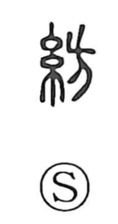

紡

Uncategorized
Kun: tsumugu | On: bou
to spin ・ make yarn
Explanation
紡 is a phono-semantic compound: the left-hand 糸 element signals the realm of thread and textiles, while the right-hand 方 serves as the phonetic, indicating the on reading bou. Early lexica such as the Yù Piān record the expression 紡絲, “spinning thread,” and the Guangyun glosses it alongside 績紡, both confirming the core sense of twisting fibers into yarn—hence, to spin, to make yarn.